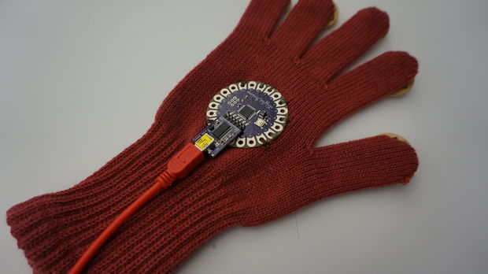
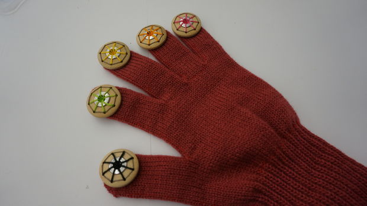
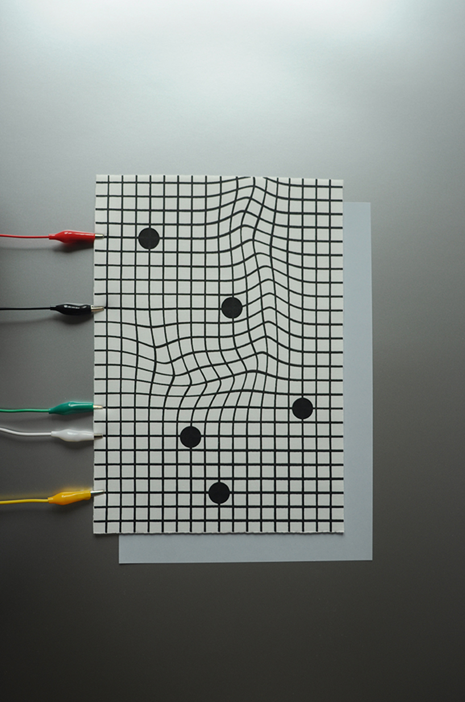
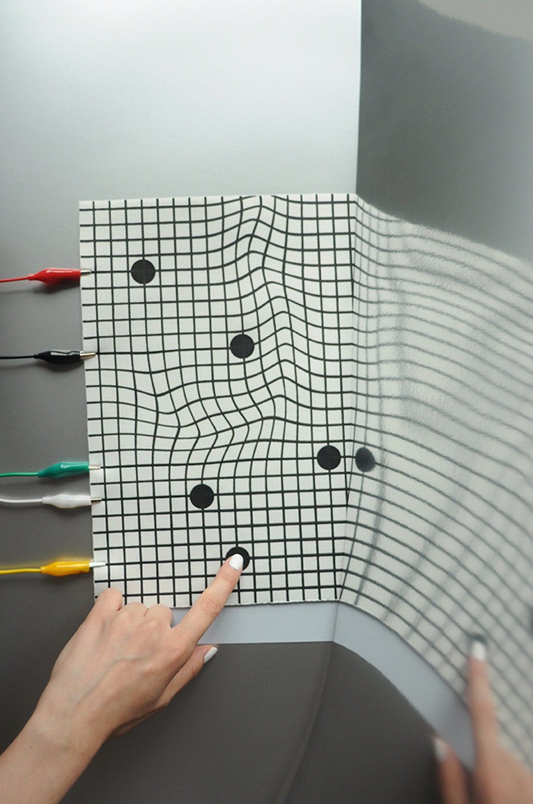
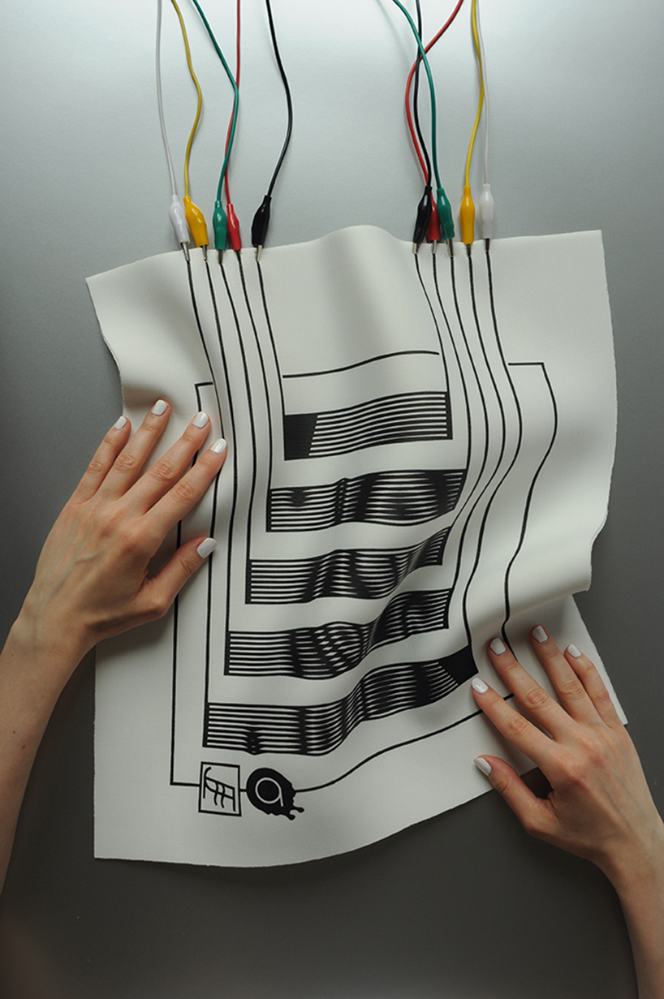
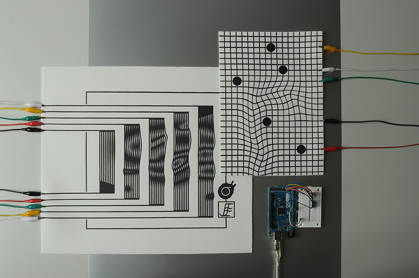

This glove has 4 leds on four fingers except thumb, repeating different kinds of on and off along touching trigger point. It was made with TinyLily processor board, 4 led curcuit boards, conductive thread, and so on. Thumb and trigger point are connected to the ground, (trigger point is made by sewing multiple times with conductive thread) and leds are connected to digital pins of TinyLily board. MORE
This glove is also using LilyPad Arduino and conductive thread, but instead of LED, each fingers make different drum sound when it touches thumb. For aesthetic figure, each fingers linked with buttons, which can sewed with thread. They used also processing with arduino to make a sound and moving images. MORE
 ‘Liquid MIDI’ is an experimental textile interface for sonic interactions, exploring aesthetics and morphology in contemporary design. the technology is screen printed with electric paint from bare conductive directly onto a textile surface, then through an arduino micro controller communicates with the desired software, using MIDI protocol. this unique interaction with this textile interface allows the medium to become part of the message, where the interface becomes part of the process of creation itself.
   